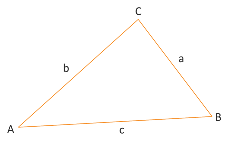

Laws of Sines & Cosines
Trigonometric Equations
Trigonometric Equations
The primary measurements that describe a triangle are the lengths of its 3 sides and the rotation of its 3 angles. Together, these 6 values define the shape of a triangle. In this lesson, we want to look at ways that we could take 3 given measurements of a triangle and find the 3 missing values. So, suppose we were given the measure of one angle and two sides. How can we find the measurements of the remaining two angles and the third side? The laws of sine and cosine are two methods, two sets of formulas, that we can use to solve such problems.
Law of Sines: Given triangle ABC with opposite sides a, b, and c, respectively, the following proportions are true.
\[\frac{\sin{A}}{a} = \frac{\sin{B}}{b} = \frac{\sin{C}}{c}\]It might help to think of the law of sines as describing the proportional relationship between the size of an angle and length of its corresponding side. In other words, the largest angle of a triangle will be opposite the longest side and the smallest angle will be opposite the shortest side.
Law of Cosines: Given triangle ABC with opposite sides a, b, and c, respectively, the following equations are true.
\[\begin{align*} c^2 &= a^2 + b^2 - 2ab\cos{C} \\ b^2 &= a^2 + c^2 - 2ac\cos{B} \\ a^2 &= b^2 + c^2 - 2bc\cos{A} \end{align*}\]It might help to think of the law of cosines as an extension of the Pythagorean Theorem for right triangles to a set of equations for any triangle. In particular, notice the first equation listed above is the Pythagorean Theorem equation, \(a^2 + b^2 = c^2\), with a little extra added to the equation. Now, it is no longer required to be a right triangle and \(c\) is no longer a hypotenuse.
These laws do not depend on the position, rotation, or type of triangle. If you flipped the above triangle upside down or rotated the whole image 90° to the right or left, the laws outlined above remain true. Also, don't get too attached to the letters used in the illustration above or the law equations. We don't have to use the letters A, B, and C. We could use any letters, such as the Greek letters \(\alpha\) ("alpha"), \(\beta\) ("beta"), and \(\gamma\) ("gamma"). Or we may not even be given letters for a specific problem. It doesn't matter because the relationships are universal. We just use ABC as a handy reference point. Also, remember that the sum of the 3 angles of a triangle will always be 180°.
One thing where care is required, however, is that each law is only applicable in specific situations, or cases. Below is a list of the possible cases that we might encounter and which law we should use.

We will look at examples of each case on the following pages.
©2025 M4thG33x (new window) Some Rights Reserved.